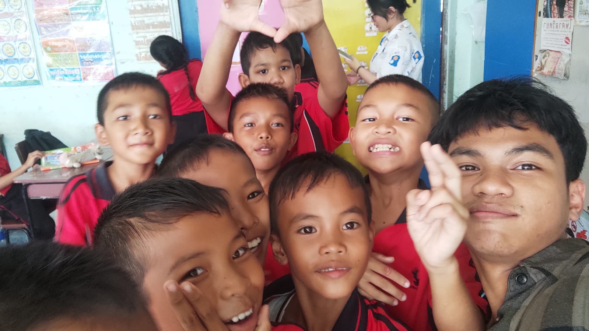
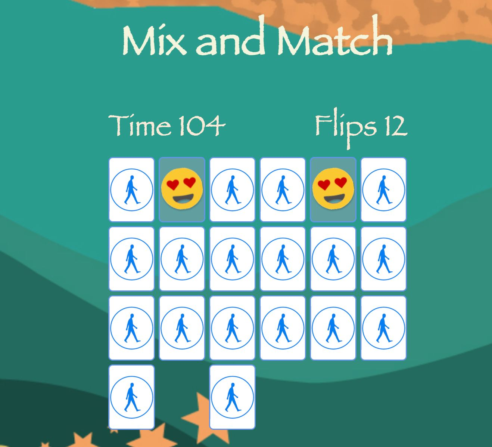

Photo caption: teaching in Ban Dim Dam Laosentai School in Sisaket, Thailand.
[WRITER'S NOTE] Dear reader, this experience cannot be captured in a few brief notes, it deserves to be told as a full story. Looking back, it is incredible how many life-changing experiences happened in just two and a half months.
On my 4th semester, i Spent the summer of 2024 in Thailand as a Global Volunteer with AIESEC, working on the 4th UN Sustainable Development Goal: Quality Education.
The first few days of arrival in Bangkok, i attended a cultural exchange and conference event. There, i met a lot of awesome people from all over the world, from China all the way to Spain. We talked about how each of our culture differs from each other and we also exchanged some of our local currency and specialties.
After the arrival events were over, i moved to Sisaket, where i began my teaching journey. I stayed with a host family whose one of them were also teachers in Sisaket, i am incredibly grateful to them for welcoming me into their home and allowing me to stay with them throughout my volunteering period.
I then began going to school each day to teach English and other basic lessons to the students. From the very beginning, the people there were incredibly kind and welcoming, but the children especially left an impression on me. They welcomed me with open arms and made me feel at home despite being in a completely unfamiliar place.
As i became more familiar with the local culture and the students, i also wanted to use my background as a developer to make the lessons more interactive. I decided to put my technical skills to the test by building a simple card-flipping game for the classroom. In the game, students had to match two randomly drawn cards and then say the name of the image they found out loud, one of ways to make the class more fun.

Photo caption: Card-flipping app for english teaching.